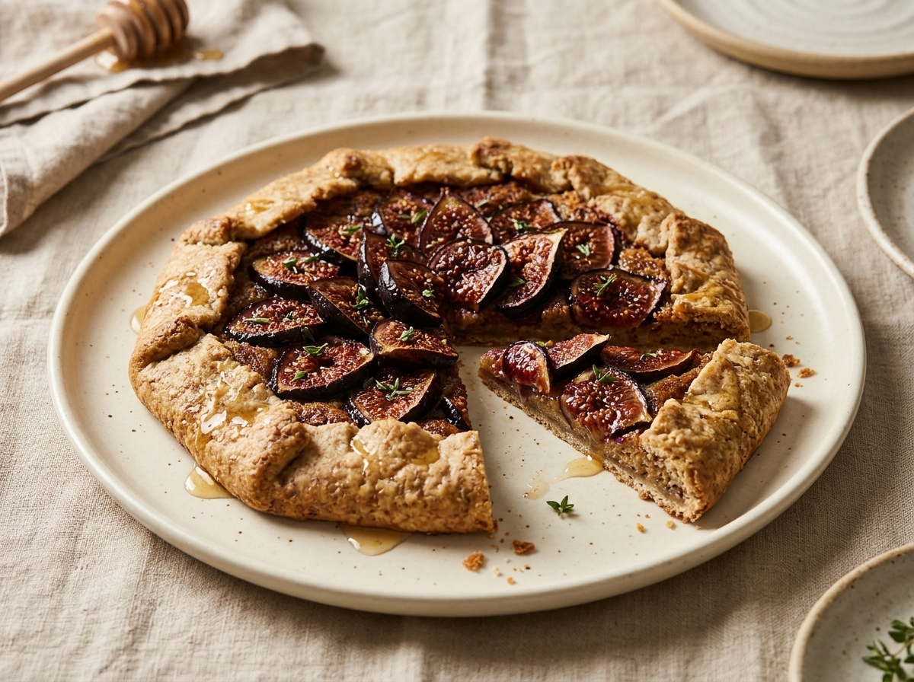

Signature
Signature
Cultured Butter Croissant
$5.25Three-day cold-fermented dough laminated with 84% butterfat Normandy-style butter for shattering layers and a delicate honeycomb crumb.

Stone-Milled Flour · Cultured Butter · Baked at Dawn
Every morning at 5:00 AM, we pull 72-hour fermented croissants, cardamom knots, and blistered country loaves from our deck ovens—made with local heritage grains and high-fat cultured butter.
From the Morning Bench
Hand-laminated in small batches and baked until deeply caramelized, crisp on the outside, and tender within.
Signature
Three-day cold-fermented dough laminated with 84% butterfat Normandy-style butter for shattering layers and a delicate honeycomb crumb.
 Morning Favorite
Morning Favorite
Pillow-soft brioche braided by hand around brown butter and freshly mortar-crushed green cardamom, finished with citrus syrup and pearl sugar.

Seasonal HarvestFree-form stone-ground spelt pastry cradling roasted almond frangipane, sliced black mission figs, thyme, and raw wildflower honey.
 Baker's Pick
Baker's Pick
Breton laminated pastry folded with flaky sea salt and organic cane sugar, baked in rings until the base crackles like salted toffee.
Slow Fermentation
At CRUMBERRY, nothing is rushed. We mill regional red fife and spelt weekly, feed our wild levain daily, and give every laminated dough three full days of cold rest before it ever meets the oven stone.
Read about our bakers & millers →